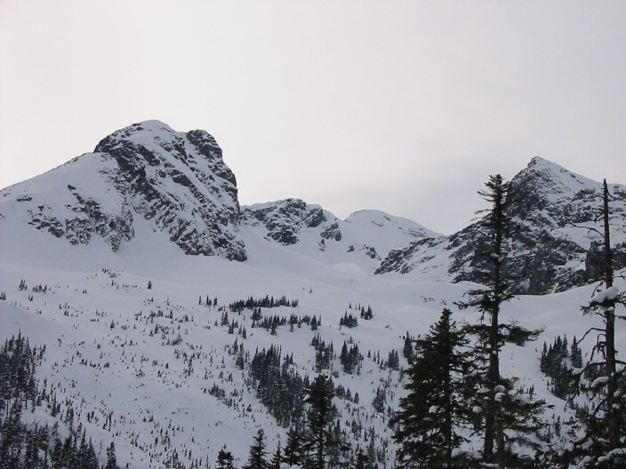

Cayoosh Peak: Photo by M. Amane
Duffey Lake area has a rather heavy traffic these days, so I heard. And it's very much justifiable. Serise Creek Cabin was built sometime ago, and now Wendy Thompson Hut is placed in Marriott Basin, opposite from Serise. When I first visited this area on skis, there was no cabin. We camped in the trees, below now-a-day Serise cabin. I think it was an Alpine Club trip. There are two things I remember well. One was a bonfire the leader made right on the snow, which brightened our sprits so much. Another was one of the members with whom I climbed Vantage Peak on the day we arrived. Enrico was a Varsity Outdoors Club member at UBC. Several years later I learnt he died on Mt. Robson on his winter climb. For a while I borrowed and kept the Freedom of Hills with his signature from library of VOC. Ray and I camped only minutes away from Duffey Lake Road. The next day I skied to Wendy Thompson Hut with a day pack. Both of us wanted to see the location of the hut for our future trip. It wasn't our first time into the Cayoosh valley. We had skied up to the lake towards Rohr Peak. A year later again two of us tried to gain the Rohr's south west ridge directly from the road. This time I had difficulty finding the entrance to Rohr route. We proceeded to the basin where the new hut was. Just as I imagined it was past the first lake in the basin. There were three teachers from Vancouver; apparently it was in the middle of spring break. One of them had visited Hokkaido and hiked there. Ray shared his story, because he was also in Hokkaido recently. The cabin was rather Spartan without a stove, but it sure attracts outdoor people into the area. (Note: April 4, 2002)